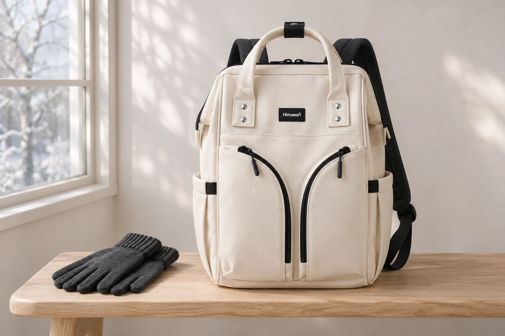
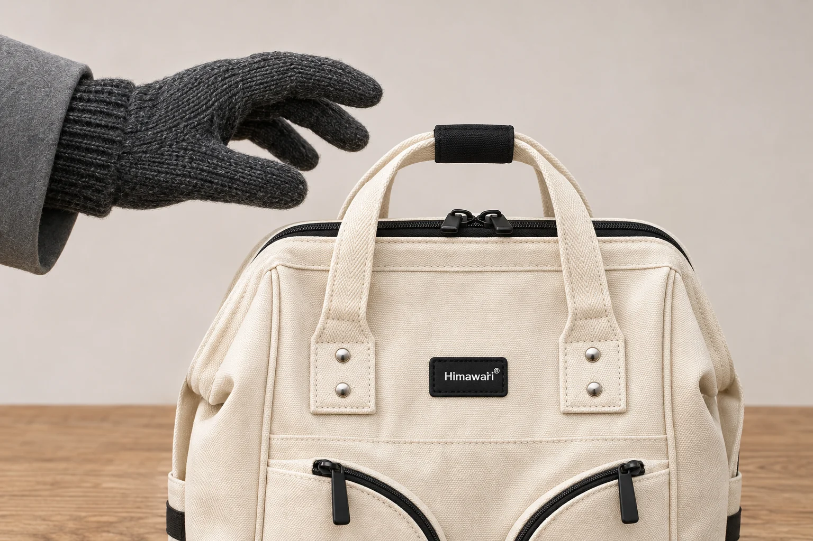
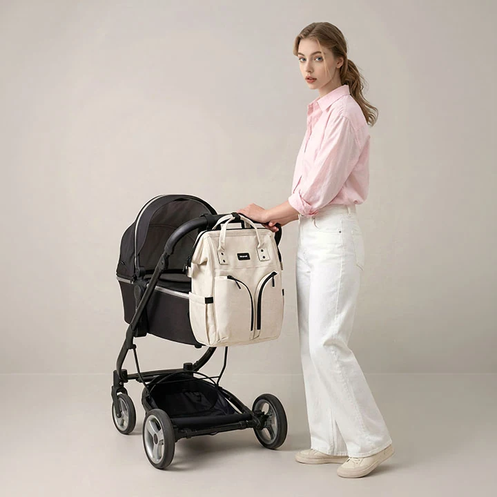

두꺼운 장갑을 낀 손에도 백팩 손잡이가 맞을까

겨울에는 가방을 어깨에서 내려 잠깐 손으로 옮기는 동작도 달라집니다. 맨손으로는 가볍게 감싸던 손잡이가 장갑을 끼면 손끝에만 걸릴 수 있고 두 손잡이를 한 번에 모으기 어렵게 느껴질 수도 있습니다. 가방의 가로와 세로가 넉넉해도 손잡이 안에 남는 공간은 별도로 봐야 합니다. 겨울 가방을 고를 때는 평소 쓰는 장갑도 비교 조건에 넣어 볼 만합니다.
No.1208 아이보리의 실제 상품 사진에는 밝은색 손잡이 두 개와 그 아래의 은색 고정부가 보입니다. 손잡이 위쪽에는 검은색 연결 부분이 있고 앞면에는 검은 직사각형 로고와 곡선 지퍼가 놓여 있습니다. 공개 외부 크기는 가로 29 × 세로 40 × 폭 17cm입니다. 손잡이 안쪽 높이와 너비는 이 사양에 따로 적혀 있지 않습니다. 본체를 설명하는 세 숫자만으로 장갑을 낀 손의 여유를 계산하기는 어렵습니다.
맨손으로 잡을 때 남는 공간
비교를 시작할 때는 손잡이를 보려고 가방을 비우기보다 평소 어떻게 쓰는지 정합니다. 책상 옆에서 들어 의자 위로 옮기는지, 차에서 꺼내 잠깐 들고 걷는지에 따라 필요한 손동작이 다릅니다. 가방을 자주 옮기는 한 장면을 고르고 그때 실제로 담는 짐과 겉옷도 떠올려 보세요. 빈 가방에서 찍은 손 사진 한 장으로 모든 사용을 설명하기는 어렵습니다.
맨손으로 확인할 수 있다면 손가락이 손잡이에 어떻게 들어가고 어디를 감싸는지 살펴봅니다. 손잡이 두 개를 함께 잡는 구성에서는 한쪽이 다른 쪽 뒤에 가려지는지도 봅니다. 손을 억지로 밀어 넣거나 손목까지 통과시키려 하지 않고 제품이 안내하는 운반 방식에서 필요한 만큼 잡습니다. 손잡이가 놓인 높이와 손가락이 들어갈 틈을 나누어 보는 것이 비교의 출발점입니다.
손잡이의 길이만 알아도 충분하다고 생각할 수 있지만 바깥 둘레와 안쪽 빈 공간은 구분해야 합니다. 두꺼운 원단이나 연결 부분이 어느 위치에 있는지에 따라 손이 닿는 면도 달라집니다. No.1208의 사진에서 검은 부분이 있다는 사실은 확인할 수 있어도 그 사진만으로 손가락 여러 개가 들어갈 여유를 수치로 정할 수는 없습니다. 실제 치수가 필요하면 손잡이 안쪽의 어느 구간을 재는지 함께 문의합니다.

장갑을 끼면 어느 부분이 달라질까
두꺼운 장갑을 낀 손에서는 손가락 사이와 손등 쪽에 원단이 더해집니다. 맨손과 비교할 때는 장갑의 이름보다 실제로 끼고 있는 상태를 보세요. 얇은 니트 장갑과 두툼한 장갑을 같은 조건으로 생각하지 않습니다. 손끝이 들어가는지와 손잡이를 감싸고 다시 놓을 수 있는지는 각각 확인할 동작입니다.
양손을 번갈아 쓸 계획이라면 평소 자주 잡는 손만 확인하고 끝내지 않습니다. 다른 손에 휴대전화나 작은 물건을 든 날에도 같은 방식으로 잡을 수 있는지는 자신의 사용 장면에서 볼 문제입니다. 손이 비는 상황을 먼저 만든 뒤 가방을 옮기는 선택도 있습니다. 짐을 든 채 무리해서 손잡이에 손을 끼우는 장면을 재현할 필요는 없습니다.
장갑이 손잡이 안쪽에서 접히는지, 두 손잡이를 모으는 사이에 소매가 끼는지처럼 눈에 보이는 접촉을 살펴봅니다. 이 차이를 장갑의 미끄럼 방지 성능이나 손잡이의 내구성으로 곧바로 해석하지는 않습니다. 특정 장갑과 이 가방을 함께 시험한 자료는 이 글에 없습니다. 실제로 쓰려는 조합에서 잡고 놓는 동작을 비교하는 질문으로 남겨 둡니다.

두 손잡이를 모으는 순간도 비교하기
No.1208처럼 손잡이가 두 개 보이는 가방에서는 손이 닿는 위치를 앞면 사진과 옆면 사진에서 함께 살펴볼 만합니다. 정면에서 포개져 보이는 부분이 옆에서는 떨어져 있을 수 있기 때문입니다. 연결 부분을 다루는 방식은 제품 안내를 확인합니다. 두 고리를 임의로 비틀어 모으거나 고정부를 당겨 손이 들어갈 틈을 만들려고 하지 않습니다.
가방에 짐을 넣고 지퍼를 닫은 상태에서도 손잡이가 같은 모양으로 놓이는지 살펴봅니다. 손잡이 아래에 겉옷이나 소지품을 끼워 두면 실제로 손을 넣을 곳이 달라질 수 있습니다. 처음 비교할 때는 그 주변을 비워 손잡이 자체가 놓인 상태를 봅니다. 맨손과 장갑을 낀 손을 비교하면서 동시에 가방 속 짐까지 바꾸면 무엇 때문에 동작이 달라졌는지 알아보기 어렵습니다.
무게가 달라질 때도 질문을 나누는 편이 좋습니다. 손가락이 들어가는 공간을 확인하는 일과 그 짐을 오래 들었을 때의 사용감은 같은 검사가 아닙니다. 공개 중량 800g은 제품 자료에 적힌 가방 무게이며 개인 소지품을 더한 총중량이나 운반 허용량을 뜻하지 않습니다. 장갑을 낀 손이 들어간다는 이유로 무게 한도를 정하거나 한쪽 손잡이에만 하중을 걸어 시험하지 않습니다.
온라인 사진에서 남겨둘 확인 항목
상품을 직접 잡아 볼 수 없다면 손잡이 전체가 보이는 사진과 연결 부분을 가까이 찍은 사진을 함께 봅니다. 모델이 손을 얹은 사진은 위치를 파악하는 데 도움이 되지만 모델의 손 크기와 장갑 유무는 내 조건과 다릅니다. 사진 속 손을 자처럼 사용해 간격을 재지 않습니다. 본체 높이 40cm를 기준으로 손잡이 틈의 높이를 비례 계산하는 방식도 촬영 각도의 영향을 받습니다.
판매자에게는 장갑을 낀 채 두 손잡이를 함께 잡으려는 목적을 적고 손잡이 안쪽 높이와 폭의 확인 가능 여부를 물을 수 있습니다. 그 수치가 어느 상태에서 측정됐는지도 알아두면 좋습니다. 검은 연결 부분을 풀었을 때와 제품 안내대로 정리했을 때의 차이가 궁금하다면 필요한 상태를 구체적으로 적습니다. 확인되지 않은 내용을 넉넉할 것이라고 채우지 않습니다.
연출 사진의 장갑은 겨울 사용 조건을 떠올리기 위한 소품이며 해당 조합의 적합성을 확인한 결과가 아닙니다. 장갑을 끼는 날에도 가방을 어깨에 메고 잠깐 손으로 옮길 수는 있지만 그 동작에 필요한 여유는 실제 손잡이와 손으로 확인해야 합니다. 고르는 기준을 큰 가방인지에서 멈추지 않고 손을 넣고 감싸고 놓는 순간까지 이어 봅니다.